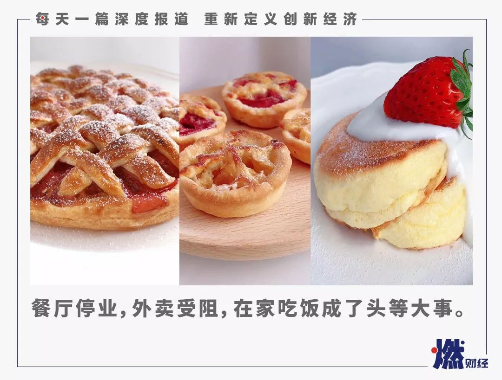
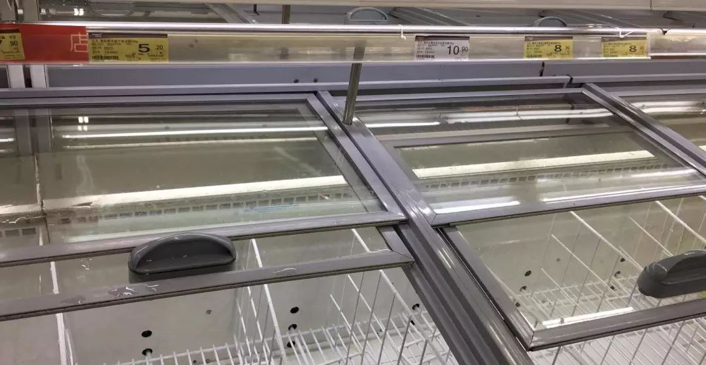
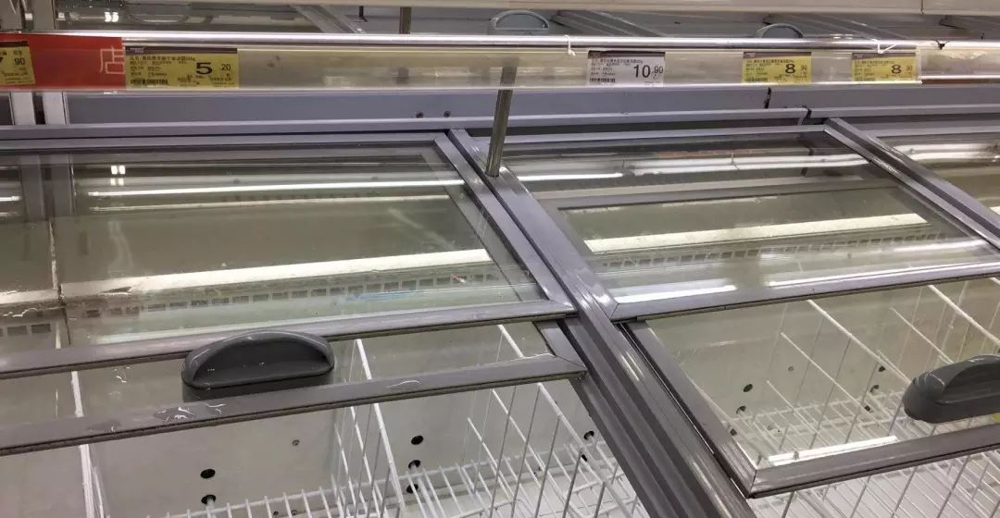

全民抢菜，让差点倒下的生鲜电商又站了起来
原文链接 备份链接 《创新经济战疫指南》，是燃财经在新型肺炎疫情期间推出的特别栏目，关注创新经济企业遇到的新难题、商讨应该采取的新对策，希望能够帮助中小企业一起战胜挑战、把握机会。本文是第3期。查看前2篇请点击《哪些行业正在逆势爆发？》《 …

燃财经（ID:rancaijing）原创
作者 | 金玙璠
编辑 | 魏佳
一场疫情，逼着全国人民都学会做凉皮了。
事情还要从外卖不让进小区说起，大家在疫情期间都学会算经济账了：取一次外卖，要消耗口罩一个、一次性手套一个，还要把手、头发、外套都洗一遍，为了保证绝对安全，不如在家做饭。

微博话题“宅在家美食才艺大比拼”热度情况
来源 / 微博
一时间，一场名为“宅在家美食才艺大比拼”的自发性赛事，从短视频平台、食谱类APP转战到朋友圈、微博，全网的美食达人们比拼的项目从凉皮到油条，最新的宠儿是电饭煲蛋糕。只知道不少人选择在家办公之余开始研究厨艺，没想到，部分选手已经在挑战hard模式了。
疫情之下，第一个受到巨大影响的行业，就是餐饮业，一夜之间全国餐厅几乎全部歇业，部分地区甚至出台了禁止所有餐饮店铺营业的紧急通知。虽然非常时期不少餐饮企业强化了外卖业务，但多数小区外卖禁入，全民响应“少出门”，加之少部分人对外卖食品安全的担忧，在家做饭似乎成了解决吃饭问题的单一路径。
“疫情期间，绝大多数人拥有了更多时间，养成了在家做饭的习惯。”不惑创投创始合伙人李祝捷评论，生鲜买菜成为刚需，这个赛道上的很多公司迎来井喷期，甚至中石化也在加油站开启了卖菜模式，另外方便类、速食类、半成品菜和成品菜都是暴涨的行情。
“全民厨子”背后，除“抢菜大战”给生鲜电商带来突击大考之外，还产生了一系列连锁反应：食谱类APP在移动应用中涨幅排名靠前，部分APP流量翻番，方便类食品成交额增长3.5倍、速冻品同比增长241%，调味品、半成品在京东上销量分别上涨129%和142%，连锁餐饮品牌为了自救转战线上卖起了半成品食材，还有创业者将智能烹饪机从韩国搬到国内……
这些现象背后到底有哪些是真正的机会，又有哪些只是短暂的“应激反应”？
***食谱类APP流量激增***
***留存用户还得拼产品***
“原来最多煮个泡面，现在被逼得在APP上学做饭，目前已经开始明目张胆在朋友圈晒厨艺了，甚至幻想出个自研食谱。”在北京工作的程郁告诉燃财经，疫情当前，外卖平台上还提供服务的店铺屈指可数，他居住的社区管理趋严，家里口罩已经告急，在吃了几顿泡面后，痛定思痛，开始学习做饭。
自己动手，丰衣足食，疫情期间，像程郁这样临时抱佛脚查食谱的人不在少数。
燃财经查询七麦数据2020年1月移动应用增长榜发现，美食佳饮子分类前20名中，食谱类APP占4席。
食谱分享平台“网上厨房”后台的数据显示，春节期间，三四线城市的新增用户有明显增长。网上厨房CEO杨洋称，受疫情影响，与大量一线城市的务工人员滞留三四线城市有直接关系。
美食社区“豆果美食”COO钟锋向燃财经介绍，在豆果美食的年夜饭大数据中，香菇鸡片、清蒸鲈鱼和蔓越莓发糕，是被做次数最多的三道菜，其中前两道都属于快手菜。
据钟锋总结，年轻一代不做饭的原因，除了工作忙，时间有限，更多的是从小在家都是爸爸妈妈做饭，自己不会做，这次疫情期间空余时间变多，很多人发现跟着食谱学做饭不是太难的事情，晒厨艺还满足了一部分年轻人的社交展示需求。
家住温州的宋齐，就是俗称的朋友圈晒厨艺狂魔。
“被迫宅在家第5天左右，我就开始打开食谱APP进修厨艺了，因为每天刷时间最长的还是疫情相关的新闻，需要转移注意力来调节心情，下厨真的很治愈，还能吃到想吃的东西。”关于朋友圈厨艺大比拼，宋齐的经验是，如果参赛，一定要挑战高难度的菜谱，互动率才会高。
宋齐的朋友圈
来源 / 受访者提供
借着这波红利，豆果美食从1月27日开始，将站内付费课程全部免费开放。钟锋坦言，在疫情爆发的第一时间，团队紧急沟通，豆果美食无法像巨头一样拿出过亿的捐款，那就把所有课程全免，支持全民在家做饭。付费课程和电商，是豆果美食变现的两个主要方式，据了解，截至发稿，该站免费课程还没有恢复收费的安排。
豆果美食CEO王宇翔告诉燃财经，疫情期间全民闭门在家，确实对学做饭有一定的红利性，从疫情开始，平台的流量增长红利明显，流量涨幅已经翻番。
关于新增用户，豆果美食后台的反馈是，新增用户与过往用户群类似，以23-45岁的女性为主；疫情的出现也让部分男性用户加入，江浙沪一带的男性用户增长率较高。
这与网上厨房的后台数据比较吻合。1月24日至2月8日期间，网上厨房20.29%的新增用户是18-34岁间的三四线城市的女性用户；这期间APP活跃用户中，不管是iOS端还是Android端，均是广东用户占比遥遥领先，其次是浙江、江苏、上海、北京等地。
那么疫情之后，这些用户能否留下，用户在家做饭的习惯还能延续多久呢？钟锋认为，这次疫情对于食谱类APP来说是个催化剂，不但让人们充分认识到了健康饮食的重要性，而且培养了一部分人在家做饭的习惯。
从长期来看，钟锋认为外出吃饭和在家吃饭并不冲突，简单的餐可以自己做，复杂的菜肴可以出去吃，甚至可以到家再复刻。最近豆果站内热度最高的菜谱，凉皮、油条、红糖发糕，都属于复刻美食，而这样的复刻美食往往是全网响应。2月12日前后，电饭煲蛋糕在豆果站内的热度开始飙升。燃财经发现，时间点与微博上同一话题的热度趋势吻合。

微博话题“电饭煲蛋糕”热度情况
来源 / 燃财经
钟锋认为电饭煲蛋糕能火起来的背后原因和凉皮类似。“豆果站内南北方用户的占比是1:1，大年初四，技术同事反馈，凉皮的搜索热度居高不下，我们也很意外，查后台发现不仅北方用户在做，连南方用户也参与进来了。”据钟锋和同事们分析，当时大家春节囤的年货消耗得差不多了，所有人宅在家里需要打发时间，凉皮工序复杂，操作过程非常消磨时间，又对食材、工具要求不高，做出来还可以分享。
宋齐就是在#朋友圈手工凉皮大赛#话题登上微博热搜后参赛的，用她的话说，做一份凉皮，至少要花一下午，最重要的是凉皮对物资要求极低，只要家有面粉就可以参赛，配菜也是丰俭由人。
程郁告诉燃财经，自己在疫情结束后可能会减少外食，因为现在发现在家做饭难度不大，而且省钱，“就像网上那个段子说的，这次疫情让很多公司老板发现，没有很多员工，也能活”。
“疫情给了食谱软件免费获客的时间，但是同时也是考验各家产品的关键时刻。”一位业内人士告诉燃财经，用户会比较，到底哪个产品更好用，只有足够好用，用户的使用习惯才会延续到疫情过后，用户才能真正留存下来。
杨洋就对燃财经表示，疫情对公司长期的发展没有影响，面对疫情期间这波机会，网上厨房的计划就是多引流拉新用户。
***方便面速冻品被抢购***
***但只有速冻品有翻身可能***
一场疫情，逼出了一批煮饭大军，也让不少人认清了自己的生存能力。
出于对自己厨艺的担忧，程郁在返京后，第一时间从到家平台上抢购了方便面、速冻水饺、火锅底料。他说，为了减少出门的次数，首选能囤能放的物资。
用“抢购”这个字眼并不夸张，在疫情期间，“你家附近的超市里，哪个口味的方便面被剩下了？”的话题在社交媒体上刷屏。当人们在讨论那些被剩下的方便面何错之有时，还有一些人根本没有选择的机会。家门口就有超市、便利店的林朵在返工后就发现，不但便利店冷柜里的便当、饭团这类保质期短的商品缺货，连超市货架上、生鲜电商平台上的方便面和速冻饺子都被抢购一空了。
 

超市里的方便面、速冻水饺被抢购一空
来源/ 受访者供图
在豆果站内，一个有趣的现象是，泡面、速冻饺子的创意吃法内容，在疫情期间上传新增增长103%。
这些食品的线上销售数据增长也较为明显。京东方面的数据显示，从除夕到初九（同比去年春节同期），全站方便类食品成交金额增长了3.5倍；多点Dmall相关负责人告诉燃财经，疫情期间（农历腊月二十六到正月初七），多点全平台到家订单量，速食冻品同比增长241%，尤其是速食、速冻及自加热食品品牌的订单量较去年同时段春节期间都有42%-99%的增长。
曾被外卖打败的方便类、速冻类食品，为什么在春节期间备受追捧？
小恒水饺创始人李恒告诉燃财经，他就是抢购方便面大军中的一员——在大年初二当天从超市、电商平台各个渠道买，当天就囤了10箱方便面。不过他坦言，速冻品、方便类食品脱销，是受疫情影响部分物资紧缺情况下的暂时状态，待工厂陆续复工，物流恢复，市场供不应求的局面可能将不再继续。
统一企业日前公开表示，全国已有八成工厂复工，主要生产方便面和饮料产品，但由于还有人员回流等问题，个别工厂还没有满线生产。
“而速冻品是有机会的，这次是整个速冻和零售行业消费升级的机会，也是部分餐饮品类的机会。”李恒称，类似于火锅、水饺这样的品类，既可以做餐饮门店，又可以做冷冻食品，如火锅底料、羊肉片等等。在他看来，受疫情影响，当大部分人不外出就餐时，一些速冻品和零售品正是这样的餐企的机会；目前火爆的生鲜行业，其本质是速冻和零售行业的升级版，只要产品做得足够好，甚至有望侵占传统企业的份额。
在李恒的规划里，小恒水饺2020年要将自家工厂50%的速冻品销往生鲜电商、电商的零售渠道，第一年，零售渠道的销售额计划占小恒水饺总收入的20%-30%，未来理想的比例是5:5。
李恒认为，餐饮行业的未来，一定是门店和零售的结合。“这一模式在一些国家已经被验证过了，只是国内餐饮业发展较慢，这次突发的疫情会推动很多餐饮老板去变革，或者促使餐饮和速冻零售行业合作甚至融合，比如速冻和零售品牌想餐饮化，或者餐饮企业想零售化，那就要跨界合作。”
餃子の王将门店
来源 / 网络
风靡日本的餐饮连锁品牌王将饺子（餃子の王将)走的就是“餐饮+零售”的路线。据李恒介绍，这个品牌在日本有800多家门店，零售产品重点销往香港、澳门和新加坡等海外市场。
*****半成品、调味料销量上涨*****
*****可能只是虚假繁荣*****
疫情来袭，餐饮行业在销售旺季遭遇寒冬，不少知名品牌在自家门口做起了“卖菜”的生意，然而有危有机，一些餐饮企业转战线上推出了半成品食材，反而销路不错。
京东、每日优鲜等平台与线下餐饮品牌合作，开拓标品菜、半成品速食生产。京东上线的“餐饮零售发展联盟”中，包括海底捞、小南国、西贝莜面村、广州酒家在内的百余家餐饮企业销售半成品食材。京东方面的数据显示，1月18日（除夕前一周）至今，半加工蔬菜成交额增长超过142%；方便菜成交额同比增长141%。每日优鲜合伙人兼CFO王珺透露，与传统餐企跨界合作，除了保障每日优鲜成品菜、半成品菜的供应，主要还是集中在方便菜、懒人菜的开发上，这是基于对未来一段时间内，用户不方便到线下餐厅吃饭、不方便叫外卖的判断。
多点Dmall也发现了这一机会，相关负责人告诉燃财经，至少到3月底，在家做饭仍将会是主流，为应对大众的消费需求和就餐习惯，多点正在上线生鲜餐饮标品，比如香菇油菜、尖椒土豆等。
宋齐也是在春节期间开始接触半成品食材的，“复工（在家办公）以后没有时间再继续买菜、洗菜、切菜的全流程了，半成品菜连调味品放多放少都不用动脑筋，懒人必备。”她对燃财经表示。
在堂食、外卖受阻的情况下，半成品速食的全渠道市场成为餐饮企业现阶段的止损方式，那么历经此次疫情，餐企提供的半成品触达了更多的客群，会不会借此机会继续开发一些预包装产品，将这种方式作为抗风险的方式之一？疫情过后，生鲜电商平台还能不能守住“菜篮子”？
餐饮行业从业者吴晓告诉燃财经，目前半成品食材的销量增长，是因为堂食、外卖停摆，消费者难以做出复杂且接近餐厅的菜品，半成品食材的需求自然会增加，等一切恢复后，需求也就回落了。
观见餐饮小学发起人、瑞幸企业顾问汪洁的态度同样不乐观。在她看来，春节期间很多餐饮品牌销售净菜和半成品菜，本质是清库存的动作，这在疫情初期是经营的补充，不会成为常态。
“退一步讲，即便有餐饮企业开辟了这个方向，但是也不会有太多，因为餐饮的价值呈现还是在烹饪的部分，而且卖净菜和半成品菜这件事，已经有很多生鲜电商在做了，餐饮企业也不一定具备这些平台的优势。”汪洁说。
在京东反馈的数据中，调味品也是涨势较为明显的品类之一。2020年1月18日（除夕前一周）至今，京东平台调味品成交额增长超过129%，其中，酱菜/榨菜、酱油/蚝油、火锅调料成交额占比最高。
燃财经联系到欣和集团相关负责人，对方反馈从天猫及京东平台各店铺销售数据看，同比往年节后数据有明显增幅；电商平台旗舰店访客超过同期30%，成交订单量是同比的2倍。但增长更多是受疫情影响，因线下受限改为线上购买的行为，电商平台的转化率也比平常高出很多倍。
吴晓同样倾向于认为，调味品在电商平台的销量见涨，更多是在疫情特殊时期，消费者的购买渠道转为线上所致。整体而言，他认为调味品的市场还是受餐饮行业发展影响较大，目前疫情期间全国餐厅几乎全部歇业，调味品的销量总体比往年只降不升。
灶坐联合创始人钟芳倒是发现了一个商机。
她之前在韩国发现了智能烹饪机，团队判断在国内的市场空间会更大，于是以同样的方式搬到了国内，并在年前已经小规模投放市场。
这款智能烹饪机的特点是一对一，也就是说，需要搭配官方研发的标准化餐品。据燃财经了解，不像便利店的餐品是熟食或半成品，智能烹饪机的餐品也是餐盒形式，不过是生食，用户取餐扫码支付，机器便会自动烹饪。
钟芳告诉燃财经，“机器的成本可以压缩到非常低，到时候会以用户购买多少套餐品送机器的形式销售。单份餐品定价在20元左右。”灶坐卖的不是硬件，核心是从餐品上获利。
随着疫情蔓延，“各个大公司陆续开工以后，最核心的诉求是减少人群聚集，甚至避免人与人之间过多的接触，我们这个项目就可以在满足这个要求的情况下，解决员工吃饭的问题。”钟芳表示，不过目前团队的重点放在To B业务上，面向C端用户的产品已经在研发阶段了，但要等到工厂复工之后才能启动生产。
对于这种商业模式，吴晓表示，作为堂食、外卖的补充尚可，但不会有太大的市场空间。“To B 场景或许可以，但是很难想象终端用户会在自己家里摆一台这样的机器，轮流吃上百种餐品。”他认为，在很长一段时间里，智能科技对餐饮的渗透和改变，会是一个趋势，但是也只会适应于便利店和部分餐饮门店场景，不适合C端用户在家拥有。
图 / Pexels
“疫情结束后，人们在家做饭的习惯还能延续多久？”燃财经就这一问题采访了三位投资人。
赛富投资基金首席合伙人阎焱称这是一个社会学问题，他认为人的一大特点是记忆特别短暂，且很难改变，年轻一代如果已经习惯了叫外卖，可能不会因为一场疫情就改变习惯。
金沙江创投主管合伙人朱啸虎认为，人的天性是懒惰的，在家做饭的习惯很难保持下去，疫情结束后，人们在家做饭的次数可能比以前稍微多一些，但很多人还是会恢复叫外卖或外食的习惯。
“疫情期间所有人长期被关在家里做饭，是不可能持续的，在疫情结束后，这部分需求必定会下降。”但李祝捷依然认为“在家吃饭”是一个非常大的赛道，事实上，不惑创投一直在找在这一赛道里做创新的公司。
*题图由受访者提供。应受访者要求，文中程郁、宋齐、吴晓为化名。


你在家学会了哪些新菜？
欢迎在评论区留下你的故事，我们会在点赞前三（超过20个）的评论里挑选一位网友，送出爱奇艺季卡一张****。文章转载请点击公众号菜单“转载合作”。
一手资讯/硬核报告/每日红包/线下活动！就差你了！快加微信rancaijing02回复“读者”一键上车！


燃财经工作室
点个在看吧😘
微信扫一扫赞赏作者 赞赏
长按二维码向我转账
点个在看吧😘
受苹果公司新规定影响，微信 iOS 版的赞赏功能被关闭，可通过二维码转账支持公众号。
原文链接 备份链接 《创新经济战疫指南》，是燃财经在新型肺炎疫情期间推出的特别栏目，关注创新经济企业遇到的新难题、商讨应该采取的新对策，希望能够帮助中小企业一起战胜挑战、把握机会。本文是第3期。查看前2篇请点击《哪些行业正在逆势爆发？》《 …
原文链接 备份链接 燃财经（ID:rancaijing）原创 作者 | 闫丽娇 编辑 | 周昶帆 疫情之下，生鲜电商迎来了风口。订单激增、拉新显著、毛利润提升，时常处于补货状态。一部分长期亏损的生鲜企业，也借助此次契机，扭亏为盈。 生鲜电 …
原文链接 备份链接 燃财经（ID:rancaijing）原创 作者 | 黎明 编辑 | 魏佳 2月18日，燃财经举办“创新经济战疫计划” 第三期线上沙龙，主题聚焦生鲜电商行业。不惑创投创始合伙人李祝捷、每日优鲜合伙人兼CFO王珺就“穿越疫 …
原文链接 备份链接 没有足够好的在线体验，用户只会短期对“免费”忠诚，风暴过后，可能一地鸡毛 文 |《财经》记者 陈潇潇 王凤 编辑 | 谢丽容 “不工作哪来饭吃。”电话那头，不时传来噼里啪啦的键盘声。学霸君CEO张凯磊嗓子有些嘶哑，从 …
原文链接 备份链接 图片来源：视觉中国 记者 | 袁颖琪 编辑 |陈菲遐 “ 海天味业领涨酱油股的日子可能不多了。 ” 突然来袭的疫情，把餐饮行业打了个措手不及，相应供应链企业也难逃影响。但是，酱油企业似乎是个例外。 2月开盘至今，海天味 …